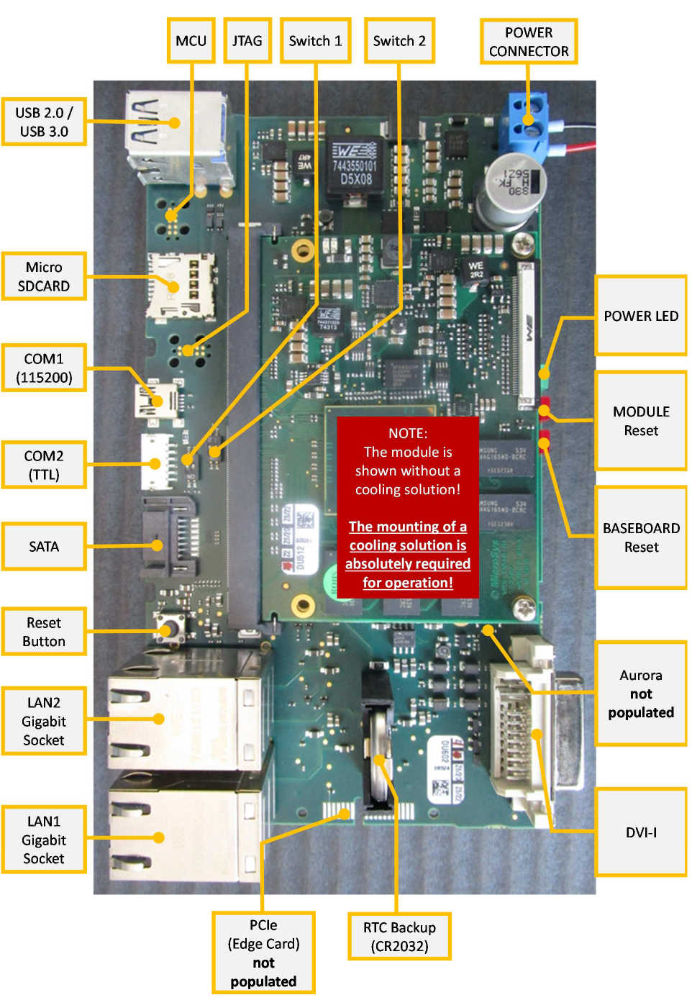
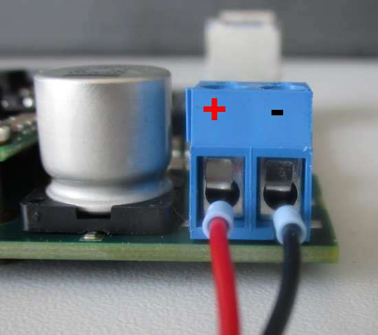
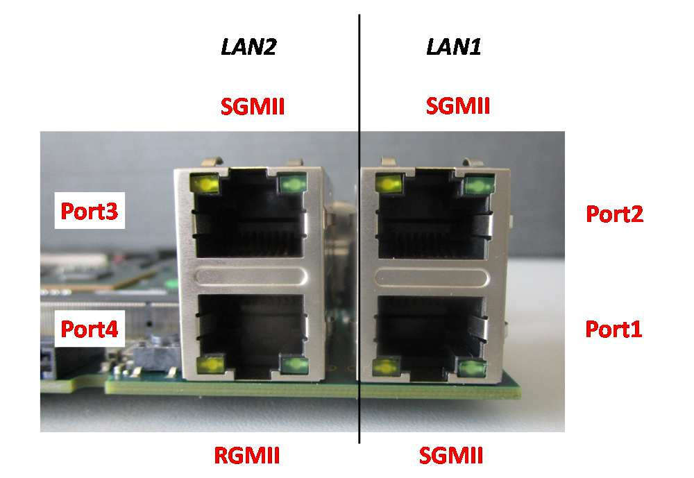

1.2. MXPLS1043¶
1.2.1. Connecting the MXPLS1043 to your development system¶
To run and test applications on your target-device it must be accessible from your development host through ssh or serial console (COM1). The peripheral interfaces are shown in the following picture.
Power-Plug
Ethernet
Note
Port2 is not available on this board
Network Connections:
Make sure your target-board and development host are on the same network and can ping each other. As a default the target-board uses DHCP to get an IP address.
To verify your connection try to login to the target-board via SSH from your host:
$ ssh root@TARGET-IP
Note
Currently there are only development-images in use which do not have a password set for the root-user.
Serial Connections:
The serial connection is given as COM1 and can be found on the first picture. It is given as mini-usb connection since the serial device is on-board converted. Thus a common mini-USB to USB cable is sufficient.
1.2.2. Install required software on your dev-host¶
$ sudo apt-get install picocom
1.2.3. Install an image¶
1.2.4. Booting the board (First Version)¶
After connecting the board run picocom and power on the board. Since no automatic booting is supported for first evaluation steps of the board, you have to set the boot environment variables like this. It needs to be done only once per device.
setenv dtbfile devicetree-Image-mpxls1043.dtb
setenv bootargs.sd root=/dev/mmcblk0p2 rootfstype=ext4 rootflags=data=journal rw console=ttyS0,115200 rootwait
setenv sdbootPre1 ext2load mmc 0:2 0x81000000 /boot/${dtbfile}
setenv sdbootPre2 ext2load mmc 0:2 0x82000000 /boot/uImage
setenv sdbootPre3 setenv bootargs ${bootargs.sd}
setenv sdboot bootm 0x82000000 - 0x81000000
setenv bootcmd run sdbootPre1 sdbootPre2 sdbootPre3 sdboot
saveenv
If everything worked fine something like
Saving Environment to NAND...
Erasing NAND...
Erasing at 0x100000 -- 100% complete.
Writing to NAND... OK
Should be written on the console. As last command execute reset.
By default the bootdelay between bootloader and kernel is set to 5s. To set another, shorter bootdelay, execute the commands
setenv bootdelay 2
saveenv